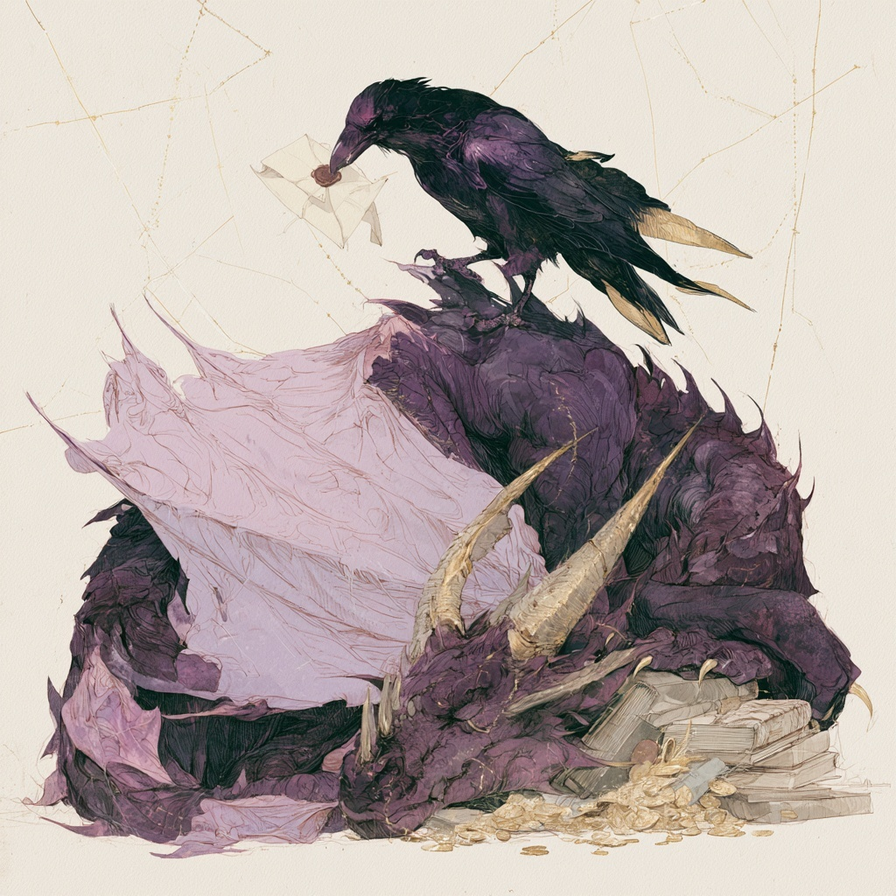

Send a Raven
Contact

For collaborations, medical writing, registry and data-system design, or questions about long-term outcomes research; the desk is attended and correspondence is answered.
Send a Raven

For collaborations, medical writing, registry and data-system design, or questions about long-term outcomes research; the desk is attended and correspondence is answered.